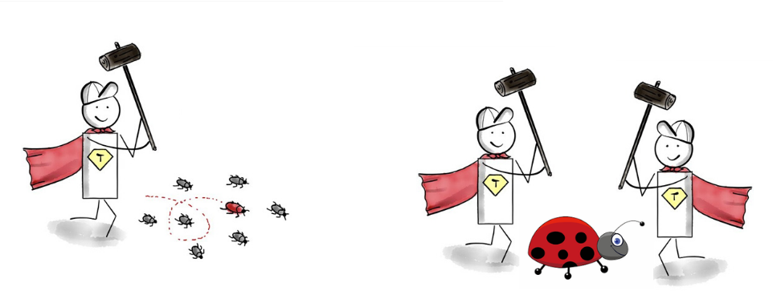

Cypress - Die Kunst der simplen E2E Tests
Agenda
- Grundlagen Testing
- Warum testen wir überhaupt?
- Testarten
- Cypress + Übungen
- Milena Fluck
- adesso SE
- Senior Software Engineer

- Hannah Ebert
- adesso SE
- Software Architektin

Grundlagen Testing
Warum testen wir überhaupt?
4 Gründe, warum Tests unsere Nerven (und Projekte) retten
1. Bugs möglichst früh finden
2. Langfristige Absicherung durch Regressionstests
Neue Features können hinzugefügt werden, ohne bestehende Funktionalitäten zu gefährden.
Was ist besser testbar?
vs.

3. Wartbarkeit erhöhen
Tests führen oft dazu, dass Code modular und verständlich geschrieben wird.
4. Dokumentation
Weil niemand Lust hat, nach einem Jahr wieder herauszufinden, was ‘doSomething()’ eigentlich tut.
Testarten
Automatisiertes Testen
vs.
Manuelles Testen
Manuelles Testen
... ist der Prozess, bei dem Tester Software manuell ausführen, um Fehler zu finden. Es erfordert keine Automatisierungstools.
- Zeitaufwändig
- Monoton
- Fehleranfällig
- Subjektiv
- Teuer
Automatisiertes Testen
... ist der Prozess, bei dem Tests mithilfe von Software-Tools automatisch ausgeführt werden, um die Funktionalität und Qualität der Software sicherzustellen.
- Wiederholbar
- Skalierbar
- Zeitsparend
Testpyramide

Was ist Unit Testing?
Testen von einzelnen Units
Automatisiert
Isoliert
Was ist eine Unit?
Der kleinste Baustein einer Applikation
z.B. Funktionen oder Klassen
Grundannahme Unit Testing:
Wenn alle Units korrekt funktionieren, dann funktioniert auch die gesamte Applikation korrekt.
Vorteile von Unit Testing
- Frühes Erkennen von Fehlern: Fehler können frühzeitig im Entwicklungsprozess entdeckt und behoben werden
- Modularität: Unit Tests fördern die Entwicklung modularen und wartbaren Codes
- Schnelle Rückmeldung: Entwickler erhalten schnell Rückmeldung über die Korrektheit ihres Codes
Integration Tests
Funktionieren die einzelnen Komponenten auch im Zusammenspiel miteinander?
End-To-End Tests
- Simulieren das echte Nutzererlebnis
- Testen ganzheitliche Geschäftsabläufe
- Ziel: Aufdeckung von Fehlern aus Benutzersicht
- Nachteil: E2E-Tests sind teuer und haben lange Ausführungszeiten, müssen sich also lohnen
Keine harten Grenzen

Component Testing z.B. mit Cypress
Component Testing ermöglicht das Testen von isolierten UI-Komponenten (Black-Box-Testing)
Vorteile von Component Tests
- Näher an der Realität als Snapshot oder DOM Tests, aber einfacheres Setup als E2E Tests
- Einfaches Debugging
Nachteile von Component Tests
- Isolierung: Interaktionen mit anderen Komponenten oder dem Gesamtsystem können übersehen werden.
- Komplexität: Das Setup kann komplex sein, insbesondere bei vielen gemockten Abhängigkeiten.
- Performance: Können langsamer sein als Unit-Tests, da sie das Rendering und die Interaktion mit dem DOM beinhalten.
Beispiel für einen Component Test
import { mount } from 'cypress/angular';
import { MyComponent } from './my-component.component';
describe('MyComponent', () => {
it('should render correctly', () => {
mount(MyComponent);
cy.get('h1').should('contain', 'Hello World');
});
});

Keine harten Grenzen
Und was macht Cypress?

Developer Experience
Die Cypress Philosophie
Batteries included - Das Cypress Setup
- Testing Framework: Mocha
- Assertion Library: Chai, Chai jQuery, Chai-Sinon
- Launcher/ Test Runner
- Reporter
- Browser: Electron
- Proxy (für Request Stubbing)
Die Cypress Desktop App
- Vereinfacht das Schreiben der Tests
- Visuell aufbereitetes Feedback
- Timetravel
- Übersichtliches Debugging
Sehr einfaches Mocking/ Stubbing
Wenn die Realität mal wieder nicht perfekt ist...
Wundervolle Dokumentation
- ... um Cypress zu lernen
- ... um die Best Practices zu erfahren
- ... um CI aufzusetzen
- ...
Cypress Setup
$ npm install –-save-dev cypress
$ npx cypress open
Let's see the magic
Testaufbau
describe('login', () => {
beforeEach(() => {
cy.visit('http://localhost:4200/');
})
it('should successfully login', () => {
cy.contains('Bingo');
cy.get('[data-cy="login-form"]')
.should('contain', 'Anmeldung');
})
})
Assertions vs. Commands
Commands sind Aktionen, die auf der Seite ausgeführt werden
Assertions sind Überprüfungen, die das Verhalten der Seite testen.
cy.get('my-selector') // Command
.should('have.length',5); // Assertion
Commands: Query vs. Non-Query
Query: Elemente finden
Non-Query: Aktionen ausführen
=> Query Commands geben ein Element zurück, Non-Query Commands nicht.
cy.get('button') // Query Command
.click(); // Non-Query Command
Übung 1: Login
Zum Repo auf GitHub
https://github.com/hannahebert/cypress-schulung-adesso
Get vs. Find vs. contains
cy.get() - Findet ein Element
cy.find() - Findet ein Kind-Element
cy.contains() - Findet ein Element anhand des Textes
cy.contains('Bingo');
cy.get('[data-cy="login-form"]')
.find('h3')
.should('contain', 'Anmeldung');
Übung 2: Bingo
Übung 1: Login
Zum Repo auf GitHub
https://github.com/hannahebert/cypress-schulung-adesso
Get vs. Find vs. contains
cy.get() - Findet ein Element
cy.find() - Findet ein Kind-Element
cy.contains() - Findet ein Element anhand des Textes
cy.contains('Bingo');
cy.get('[data-cy="login-form"]')
.find('h3')
.should('contain', 'Anmeldung');
Übung 2: Bingo
Übung 3: Custom Command
Chain of Commands - Retry Logic
Chain of Commands - Retry Logic
cy.get('my-selector')
.should('have.length',5)
.eq(1)
.should('contain', 'magic');
Chain of Commands - Retry Logic
cy.get('my-selector')
Chain of Commands - Retry Logic
cy.get('my-selector')
.should('have.length',5) // FAIL
Chain of Commands - Retry Logic
cy.get('my-selector')
Chain of Commands - Retry Logic
cy.get('my-selector')
.should('have.length',5)
Chain of Commands - Retry Logic
cy.get('my-selector')
.should('have.length',5)
.eq(1)
Chain of Commands - Retry Logic
cy.get('my-selector')
.should('have.length',5)
.eq(1)
.should('contain', 'magic');
Chain of Commands - Retry Logic
cy.get('my-selector')
.should('have.length',5)
.eq(1)
.should('contain', 'magic'); // FAIL
Chain of Commands - Retry Logic
cy.get('my-selector')
Chain of Commands - Retry Logic
cy.get('my-selector')
.should('have.length',5)
Chain of Commands - Retry Logic
cy.get('my-selector')
.should('have.length',5)
...
Übung 4: Screenshot & Video
cy.request vs cy.intercept
cy.request – Direkt API testen
Zweck: HTTP-Anfragen direkt senden und prüfen.
Einsatzgebiet:
- Backend-APIs testen
- Testdaten vorbereiten (z. B. Benutzer erstellen)
- Systemzustände prüfen
cy.request – Beispiel
cy.request('POST', '/api/login',
{ username: 'test', password: 'test123' })
.then((response) => {
expect(response.status).to.eq(200);
expect(response.body).to.have.property('token');
});
cy.intercept – Netzwerkanfragen steuern
Zweck:
- Anfragen abfangen und Stub- oder Mock-Daten verwenden
- Netzwerkverkehr überwachen
Einsatzgebiet:
- API-Fehler simulieren
- Tests isolieren (kein echter Backend-Aufruf)
- Frontend-Integration testen
cy.intercept – Beispiel
cy.intercept('GET', '/api/data', { fixture: 'data.json' })
.as('getData');
cy.visit('/dashboard');
cy.wait('@getData').then((interception) => {
expect(interception.response.statusCode).to.eq(200);
});
cy.request vs cy.intercept
| Merkmal | cy.request | cy.intercept |
|---|---|---|
| Zweck | Direkte HTTP-Anfragen senden | Anfragen abfangen und manipulieren |
| Browser-Interaktion | Nicht erforderlich | Browser-basiert |
| Mocking möglich? | Nein | Ja |
| Anwendungsbereich | API-Tests, Datenvorbereitung | Überwachen, Stubben, Mocking von Requests |
Best Practices
Fachlich sinnvolle Tests
Teste nur das, was wirklich wichtig ist - sprich dazu mit POs/Stakeholdern/Endnutzern.
Resiliente Tests
Verwende stabile Selektoren (z.B. `data-cy`), um auf UI-Elemente zuzugreifen.
Schreibe unabhängige Tests
Tests sollten isoliert und unabhängig voneinander sein.
DRY - Don't repeat yourself (too often)
Verwende Custom Commands - Erstelle wiederverwendbare Befehle für häufige Aktionen, um den Testcode zu vereinfachen
Aber
KISS - Keep It Simple Stupid
Nicht alles muss in ein Command - Halte die Tests so einfach wie möglich, um die Wartbarkeit zu erhöhen.
Nutze `cy.fixture()` für Testdaten
Lade Testdaten aus externen Dateien, um die Tests sauber und wartbar zu halten.
Nutze `cy.intercept()` für API-Stubbing
Simuliere API-Antworten, um Tests schneller und zuverlässiger zu machen.
Setze den Zustand vor jedem Test zurück
..., um Seiteneffekte zu vermeiden (`beforeEach`).